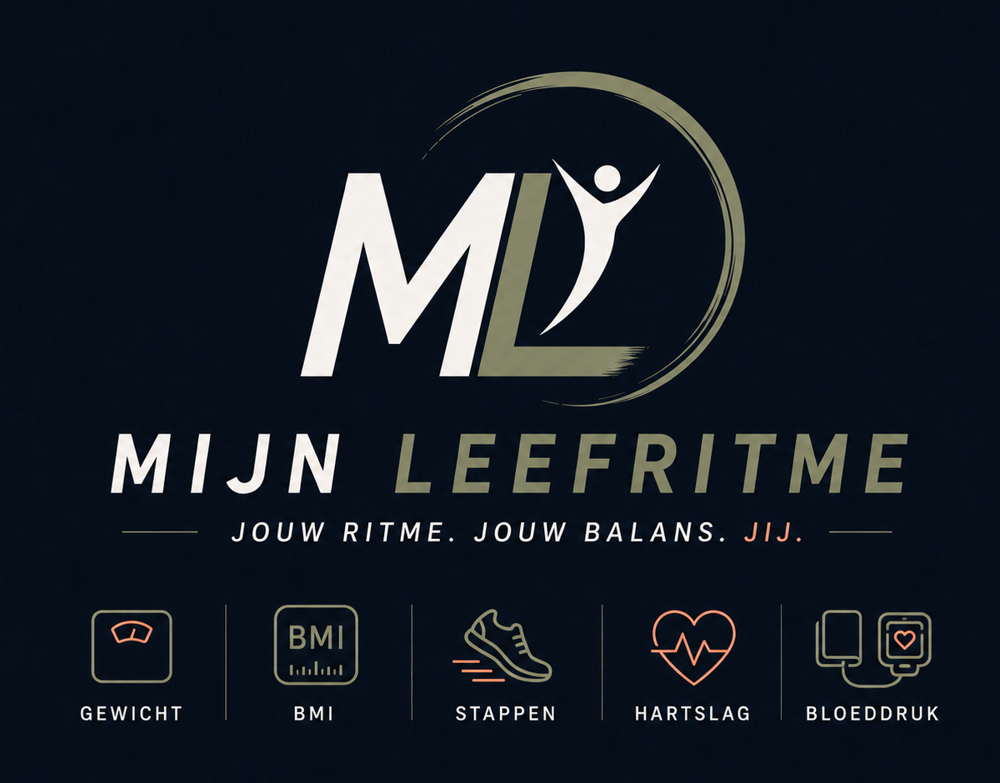

Wat valt op?
Vul je metingen in. Mijn LeefRitme geeft daarna één korte boodschap over wat positief opvalt of aandacht verdient.
LeefRitme-score
Vul je metingen in om je totale ontwikkeling te volgen.
Score per onderdeel
Eenvoudige voortgangsindicator, geen medische beoordeling.
Gewicht
Bloeddruk
Rusthartslag
Stappen
Buikomtrek
Streefgewicht
BMI
Lichaamsmaten
Mijn LeefRitme
Jouw gegevens
Voor je BMI, voortgang en persoonlijke doelen.
Voor je account en een veilige koppeling met coach of arts.▤ Rapport arts / coach
Maak een overzicht van je metingen en voortgang.
📄 Uitslagen & documenten
Maak een foto of bewaar een bloeduitslag, brief of PDF bij je gezondheidsgegevens.
🔒 Privacy
Jouw gegevens zijn van jou.
Mijn LeefRitme deelt niets zonder jouw toestemming.
⇧ Back-up
Mijn LeefRitme maakt na wijzigingen automatisch lokale veiligheidskopieën. Met Back-up opslaan opent iPhone/Android de systeemeigen deel-/bewaarfunctie voor een extern bestand met datum én tijd.
Gebruiksvoorwaarden
Versie 38.48 · bijgewerkt 4 september 2026
1. Doel van Mijn LeefRitme
Mijn LeefRitme is een hulpmiddel om persoonlijke gezondheidsgegevens, metingen, trends, documenten en doelen overzichtelijk bij te houden. De app is bedoeld voor eigen inzicht en ondersteuning en is geen medisch hulpmiddel voor diagnose of behandeling.
2. Geen medisch advies
Informatie, signaleringen, categorieën en de LeefRitme-score zijn informatief. Zij vervangen geen advies, diagnose of behandeling door een arts of andere bevoegde zorgprofessional.
3. Eigen gegevens en invoer
Je bent zelf verantwoordelijk voor de juistheid van gegevens die je handmatig invoert. Gegevens uit Apple Health, Health Connect, Samsung Health of andere gekoppelde bronnen kunnen vertraagd of onvolledig zijn.
4. Opslag en back-ups
De huidige versie bewaart gegevens hoofdzakelijk lokaal op het apparaat. Mijn LeefRitme biedt lokale veiligheidskopieën en een externe JSON-back-up. Lokale gegevens kunnen verloren gaan door verwijderen van de app, wissen van opslag, systeemproblemen of verlies van het apparaat. Bewaar daarom regelmatig een externe back-up buiten de app.
5. Gezondheidskoppelingen
Toegang tot Apple Health of Health Connect wordt alleen gebruikt na jouw toestemming en alleen voor functies die gezondheidsgegevens nodig hebben. Je kunt die toestemming via het besturingssysteem weer intrekken. Gezondheidsgegevens worden niet gebruikt voor advertenties of verkocht aan derden.
6. Beschikbaarheid en wijzigingen
Mijn LeefRitme wordt actief ontwikkeld. Functies kunnen worden verbeterd, gewijzigd of tijdelijk niet beschikbaar zijn. We proberen gegevenscompatibiliteit tussen versies te behouden.
7. Verantwoord gebruik
Gebruik Mijn LeefRitme niet voor illegale doeleinden of om rechten van anderen te schenden. Deel gezondheidsgegevens of back-ups alleen met personen of organisaties die je vertrouwt.
8. Intellectuele eigendom
De naam, vormgeving en software van Mijn LeefRitme zijn beschermd voor zover daarop intellectuele-eigendomsrechten rusten. Eigen gezondheidsgegevens en documenten blijven van jou.
9. Aansprakelijkheid
Mijn LeefRitme is bedoeld als ondersteunend hulpmiddel. Voor zover wettelijk toegestaan wordt geen garantie gegeven dat de app altijd foutloos, volledig of ononderbroken werkt.
10. Wijzigingen in deze voorwaarden
Deze voorwaarden kunnen worden aangepast wanneer functies, wetgeving of de werking van Mijn LeefRitme veranderen. In de app wordt de actuele versie vermeld.
Support
Mijn LeefRitme 38.60
Probleem met gegevens of back-up?
Maak, als dat nog mogelijk is, eerst een externe back-up via Mijn LeefRitme → Back-up opslaan. Verwijder de app niet zolang je gegevens nog niet veilig buiten de app staan.
Back-up terugzetten
Laatste terugzetten gebruikt de nieuwste lokale veiligheidskopie. Met Andere back-up kiezen kun je een eerder opgeslagen Mijn LeefRitme JSON-bestand selecteren.
Apple Health of Health Connect
Controleer eerst of Mijn LeefRitme toestemming heeft voor het betreffende gegevenstype. Synchroniseer daarna opnieuw vanuit Gezondheid koppelen. Op Samsung kan de keten lopen via Galaxy Watch → Samsung Health → Health Connect → Mijn LeefRitme.
App lijkt oude gegevens te tonen
Sluit Mijn LeefRitme volledig af en open de app opnieuw. Controleer daarna het versienummer onder Over Mijn LeefRitme.
Welke informatie helpt bij support?
Noteer toesteltype, iOS- of Android-versie, Mijn LeefRitme-versie, wat je deed vlak vóór het probleem en wat je verwachtte te zien. Een schermafbeelding helpt vaak ook.
Contact
Tijdens de testfase loopt ondersteuning rechtstreeks via de ontwikkelaar. Vóór publicatie in de App Store en Google Play wordt een openbaar support-e-mailadres toegevoegd.
Privacyverklaring
Versie 38.48 · bijgewerkt 4 september 2026
1. Wie is verantwoordelijk?
Mijn LeefRitme wordt in de huidige testfase ontwikkeld en beheerd door Mijn LeefRitme. Een definitief openbaar contactadres en support-e-mailadres worden vóór publicatie in de App Store en Google Play toegevoegd.
2. Welke gegevens kan Mijn LeefRitme verwerken?
Dat kunnen onder meer zijn: naam, e-mailadres, geboortedatum, geslacht, lengte, gewicht, lichaamsmaten, stappen, bloeddruk, hartslag, bloedsuiker, streefgewicht, rapportinstellingen, gezondheidskoppelingen en door jou opgeslagen foto's, PDF's of andere documenten.
3. Waarvoor worden deze gegevens gebruikt?
De gegevens worden gebruikt om jouw persoonlijke overzicht, trends, grafieken, rapporten, LeefRitme-score en andere door jou gekozen functies te tonen. Mijn LeefRitme gebruikt gezondheidsgegevens niet voor advertenties, profilering voor reclame of verkoop aan derden.
4. Lokale opslag
In de huidige versie worden ingevoerde gegevens en documenten hoofdzakelijk lokaal op jouw apparaat bewaard. Mijn LeefRitme verstuurt deze gegevens niet automatisch naar een arts, coach, adverteerder of andere derde partij.
5. Apple Health en Health Connect
Mijn LeefRitme vraagt alleen toegang tot gezondheidsgegevens die nodig zijn voor functies die jij gebruikt. Toestemming kun je via Apple Health of Android Health Connect intrekken. Gegevens uit deze bronnen kunnen vertraagd, onvolledig of afhankelijk van de bronapp zijn.
6. Delen en exporteren
Een rapport, CSV, document of back-up wordt alleen gedeeld of geëxporteerd wanneer jij daarvoor zelf een actie uitvoert. Daarna ben jij verantwoordelijk voor de plek waar je het bestand bewaart en met wie je het deelt.
7. Back-ups en bewaartermijn
Bij het maken van een back-up bewaart Mijn LeefRitme lokaal maximaal vijf veiligheidskopieën voor snel herstel. Oudere lokale veiligheidskopieën worden automatisch verwijderd. Externe JSON-back-ups die jij opslaat in Bestanden, iCloud Drive, Android-opslag of elders vallen buiten het beheer van Mijn LeefRitme en blijven bestaan totdat jij ze zelf verwijdert.
8. Verwijderen van gegevens
Je kunt metingen en documenten in de app verwijderen. Het verwijderen van de app of het wissen van app-/websiteopslag kan lokale Mijn LeefRitme-gegevens verwijderen. Maak daarom eerst een externe back-up als je gegevens wilt bewaren.
9. Beveiliging
Mijn LeefRitme beperkt gegevensverwerking zoveel mogelijk tot het eigen apparaat en vraagt alleen noodzakelijke toegangsrechten. Geen enkel digitaal systeem kan echter absolute beveiliging garanderen. Bewaar externe back-ups op een locatie die je vertrouwt.
10. Kinderen
Mijn LeefRitme is in de huidige versie niet specifiek ontworpen voor gebruik door kinderen en is niet bedoeld om zonder passende begeleiding gezondheidsbeslissingen voor minderjarigen te nemen.
11. Toekomstige cloud-, account- of coachfuncties
Wanneer in de toekomst cloudopslag, accounts, automatische deling met arts of coach, abonnementen of andere online functies worden toegevoegd, wordt deze privacyverklaring vooraf aangepast en worden waar nodig aanvullende toestemmingen gevraagd.
12. Wijzigingen
Deze privacyverklaring kan worden aangepast wanneer functies, wetgeving of de manier waarop Mijn LeefRitme gegevens verwerkt veranderen. In de app wordt steeds de actuele versie vermeld.
13. Contact
Vóór publicatie in de App Store en Google Play wordt een openbaar privacy- en supportcontact toegevoegd.
Uitslagen & documenten
Voeg een foto of bestand toe, bijvoorbeeld een bloeduitslag van huisarts of ziekenhuis.
Documenten worden lokaal op dit apparaat bewaard en niet automatisch gedeeld.
Gezondheid koppelen
Automatische gegevens
Mijn LeefRitme is voorbereid op Apple Health en Android Health Connect.
Gegevens die we gaan synchroniseren
Waarom nog niet automatisch?
Deze versie van Mijn LeefRitme is nog een web-app. Apple Health en Health Connect kunnen pas echt worden uitgelezen zodra we hiervan een native iPhone- en Android-app maken.
Handmatige invoer blijft altijd beschikbaar.
Rapport arts / coach
Opnemen in rapport
In het geopende rapport opent Afdrukken / bewaren als PDF op iPhone en Android het systeemeigen afdrukvenster.